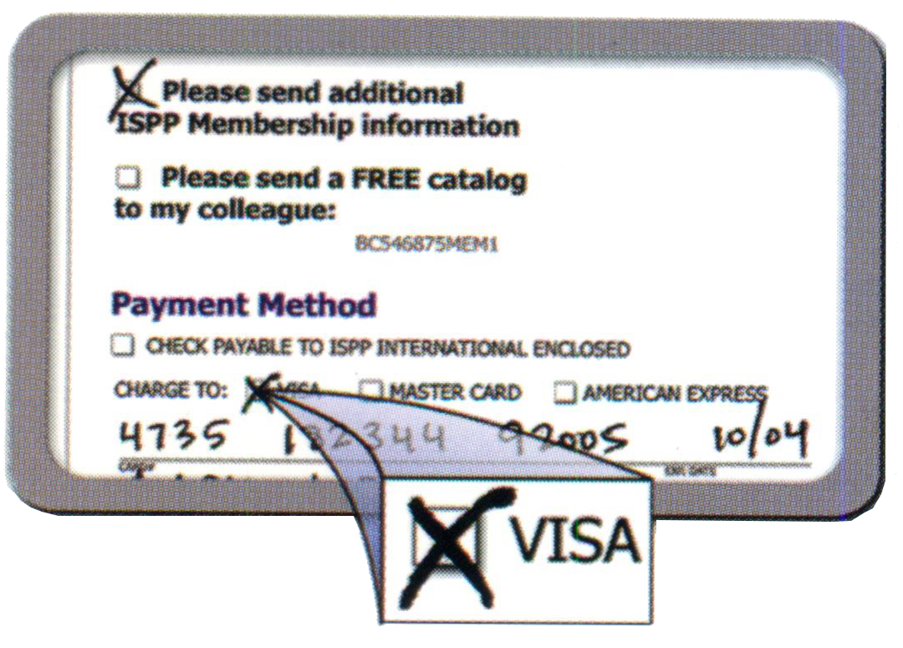
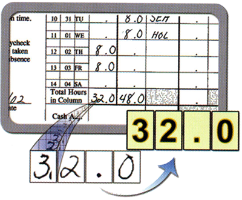
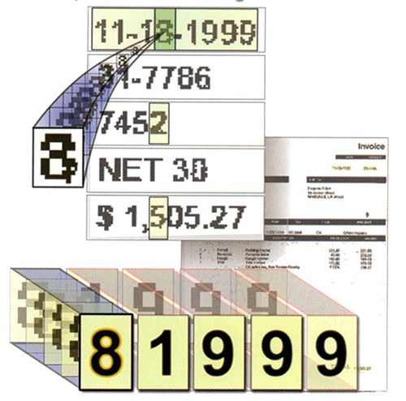
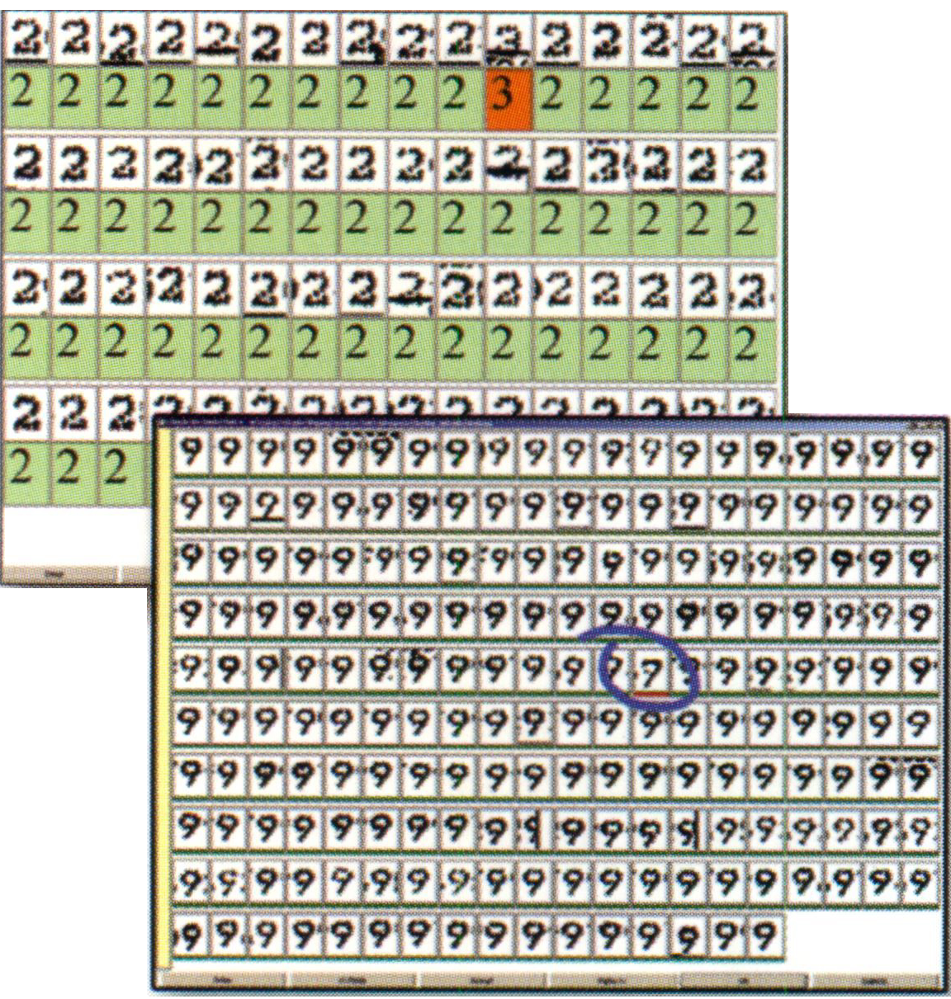
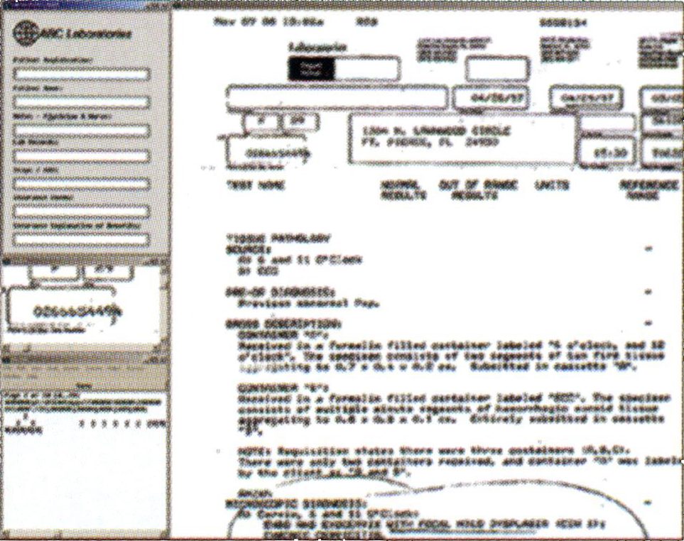
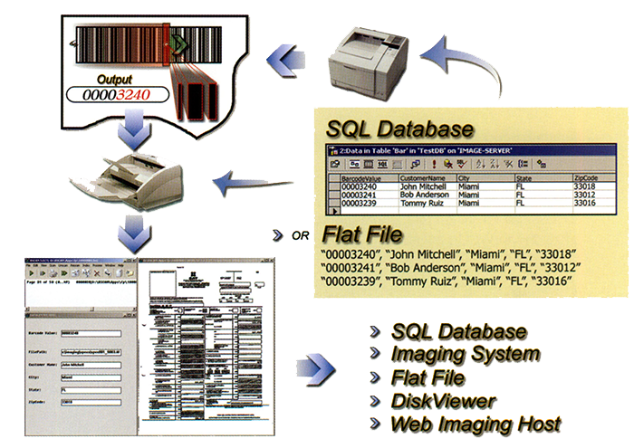

Optical Mark Recognition
Intelligent Character Recognition
Optical Character Recognition
Automated Recognition Engines
BSCAN's powerful recognition engines work quickly and accurately using the latest technology in forms recognition, registration and data extraction. Its all new setup interface simplifies the of the most sophisticated forms processing tools available today
Rapid Character Correction
Standard OCR and ICR engines cannot determine precisely which character have been misread, but they do indicate those read with low confidence.
Rapid Character Review
Characters are sorted for fast and accurate review. BSCAN's RCC feature allows users to select errors with the mouse for correction.
Full Page Review
Review all data at once. For "classified" projects, this is the only stage that requires proper security clearances.
Using Barcode Separator Sheets
|
 |
UNITED STATES
543 NW 77th Street, #210
Boca Ration, FL 33487
Tel 561.995.8334
Fax 561.995.8036
EUROPE
Hatzfelder Str. 161-163
D-42281 Wuppertal
Germany
Tel 49-202-27058-0
Fax 49-202-279058-40
SOUTH AMERICA
R. Cristano Viana, 413
Sao Paulo, SP
05411-000
Tel 5511-3061-2520
Fax 5511-3064-8896